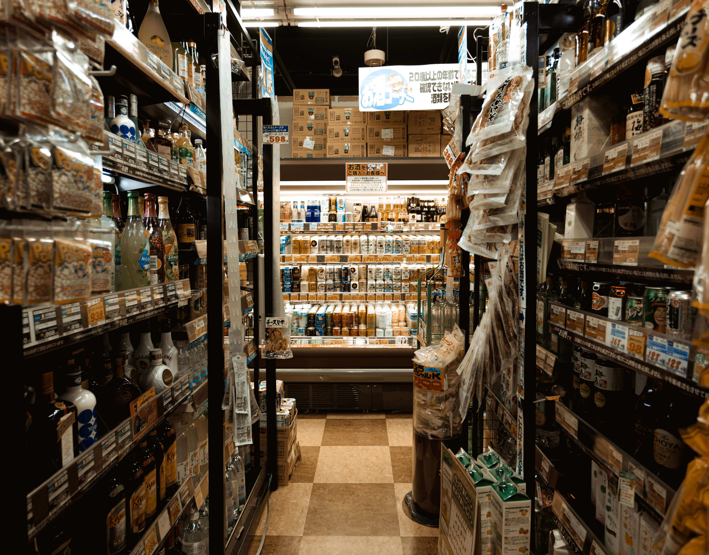

bancha.vn
Trà già bancha 3 năm
bancha.vn
Trà già bancha 3 năm
Pha trà Bancha với tương tamari hoặc nước tương có thể làm tăng hương vị & mang lại hương vị thậm chí còn ngon hơn, gia vị linh hoạt hơn với một số giá trị dinh dưỡng bổ sung từ trà.
Pha trà Bancha và tương tamari là quá trình kết hợp trà Bancha, một loại trà xanh Nhật Bản, với tương tamari, một loại nước tương đậm đà và mặn được sử dụng rộng rãi trong ẩm thực Nhật Bản.
Trà Bancha có xuất xứ từ các lá trà chín màu xanh nhạt và có hương vị nhẹ nhàng. Nó thường được ngâm trong nước nóng để tạo ra một nước trà nhẹ và thanh mát.
Tương tamari là một loại tương đậm đặc được làm từ đậu nành. Nó có màu đậm và mùi vị mặn đặc trưng. Tương tamari thường được sử dụng trong nhiều món ăn Nhật Bản để tăng cường hương vị mặn và đậm đà.
Khi kết hợp trà Bancha với tương tamari, ta có một đồ uống kết hợp giữa hương vị trà nhẹ nhàng và mùi vị mặn đặc trưng của tương tamari. Quá trình pha trà Bancha và tương tamari có thể tạo ra một đồ uống có hương vị độc đáo và cân bằng giữa hương vị truyền thống của trà và mùi vị mặn đặc trưng của tương tamari.
Loại trà này sẽ có tác dụng tăng cường và giải khát cho những người khỏe mạnh. Nước tương, cũng như bancha, có tác dụng kiềm hóa máu có tính axit (máu có tính axit có thể do hoạt động quá sức, uống nhiều rượu hoặc cũng có thể do ăn đường hoặc thức ăn động vật). “Shō-Ban” cũng kích hoạt lưu thông máu.
Thành phần:
Chuẩn bị:
Nghiên cứu cho thấy thực phẩm giàu vị ngọt có thể điều chỉnh sự thèm ăn của bạn và giúp giảm cảm giác thèm đường, muối và chất béo. Rõ ràng vị umami có thể báo hiệu cho não biết rằng nó đang ăn những thức ăn thỏa mãn, điều này cũng có lợi cho những ai không có cảm giác thèm ăn. Trong một nghiên cứu về những bệnh nhân cao tuổi bị mất cảm giác ngon miệng và giảm vị giác do điều trị y tế, vị umami làm tăng tiết nước bọt và họ thích thú với hương vị của thức ăn.
Pha trà Bancha với tương tamari là một cách thú vị để tạo ra một loại đồ uống kết hợp giữa hương vị trà nhẹ nhàng và mùi vị mặn của tương tamari. Đây là cách pha trà Bancha với tương tamari:
Nguyên liệu:
Cách pha trà Bancha và tương tamari:
Lưu ý rằng tương tamari có hương vị mặn đặc trưng, vì vậy hãy sử dụng một lượng tương tamari phù hợp với khẩu vị cá nhân. Bạn cũng có thể thay đổi tỉ lệ tương tamari và trà Bancha để tạo ra sự kết hợp vị mà bạn thích.
Hãy thử pha trà Bancha với tương tamari để tận hưởng hương vị độc đáo và cân bằng giữa trà và tương tamari.
Pha trà Bancha và tương tamari không chỉ tạo ra một đồ uống ngon miệng mà còn mang lại một số công dụng kháng vi khuẩn và cung cấp chất chống oxy hóa. Dưới đây là một số công dụng của việc kết hợp trà Bancha và tương tamari:
Pha trà Bancha và tương Tamari cũng có thể được sử dụng một cách hữu ích trong các trường hợp:
Nước tương tamari là một loại nước tương không chứa lúa mì của Nhật Bản. Nó là một loại gia vị khá nổi tiếng, vì vậy bạn có thể tìm thấy nó ở gian hàng gia vị châu Á trong các cửa hàng tạp hóa gần bạn.
Để được sản xuất đại trà, nước tương thông thường (shoyu) được ủ với 50% lúa mì như một thành phần bổ sung. Như chúng ta biết, lúa mì có chứa gluten, một loại protein có thể gây ra các vấn đề sức khỏe cho những người không dung nạp.
Nước sốt tamari có thể là một sự thay thế tuyệt vời cho nước tương thông thường vì cả hai đều có một chút tương đồng về hương vị. Trên thực tế, do đặc tính của nó, nước sốt tamari đã trở thành một loại gia vị đậu nành được yêu thích, đặc biệt đối với những người muốn ăn không có gluten. Ngoài ra còn có nước sốt tamari không chứa gluten được chứng nhận trên thị trường dành cho những người hoàn toàn không ăn được gluten.
Đặc Điểm Đặc Biệt Của Sốt Tamari: Tại Sao Nên Chọn Sốt Tamari?